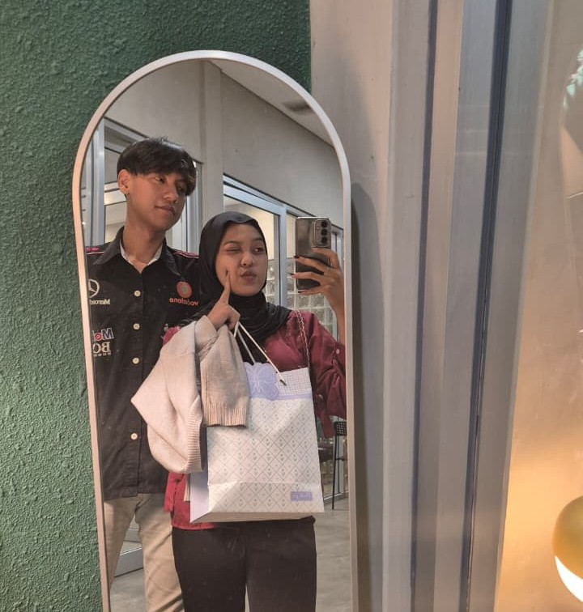
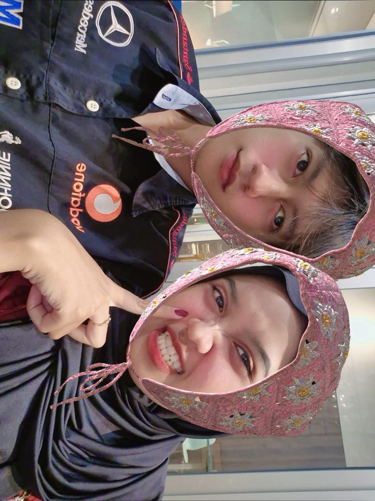
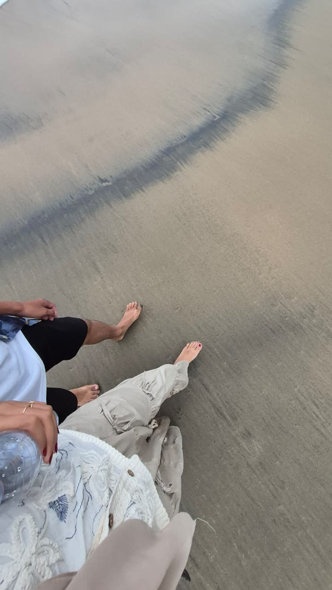
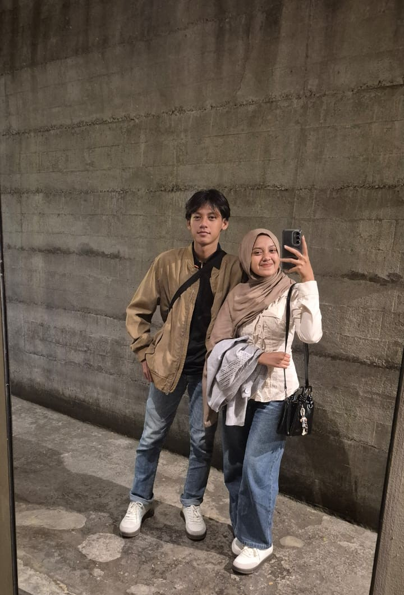
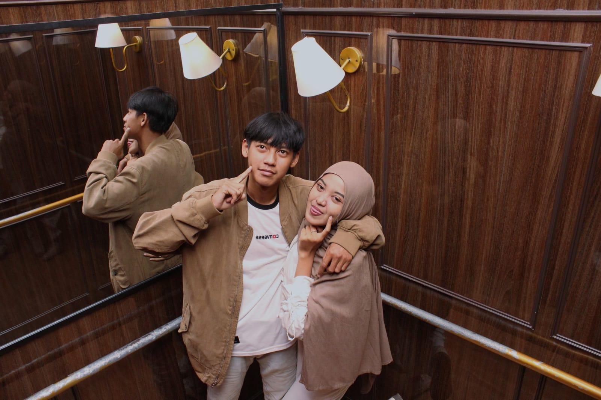
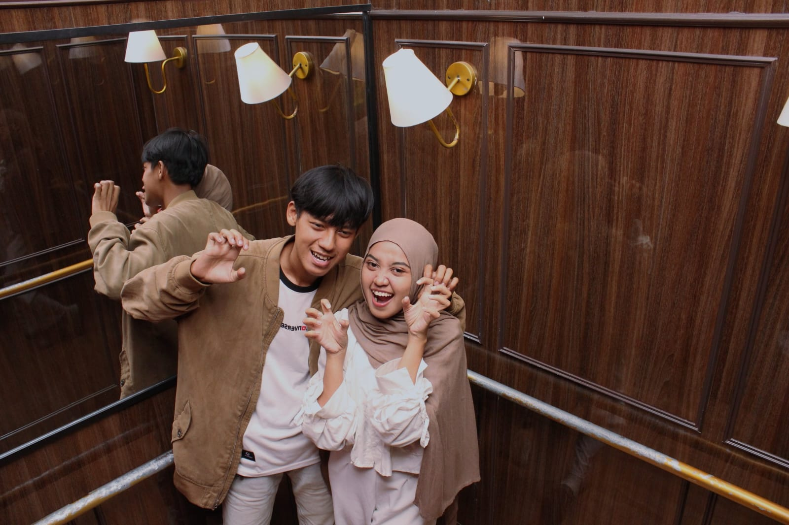
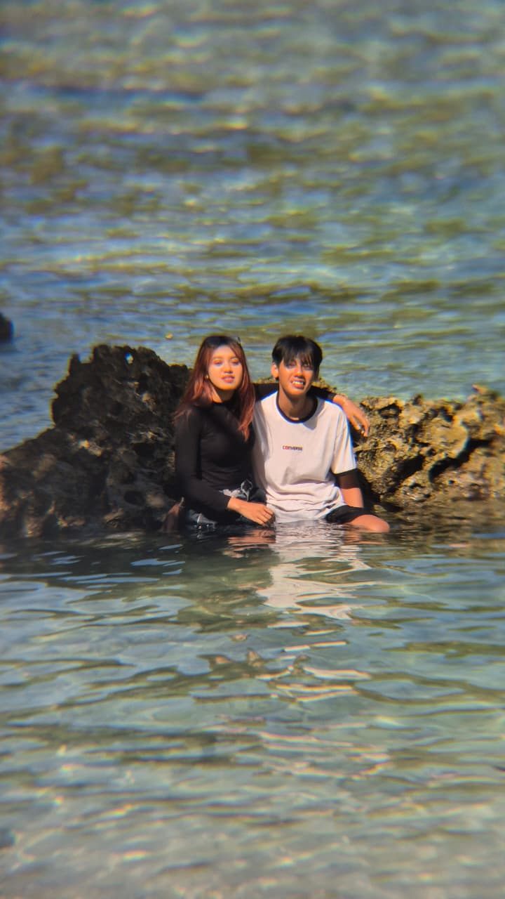
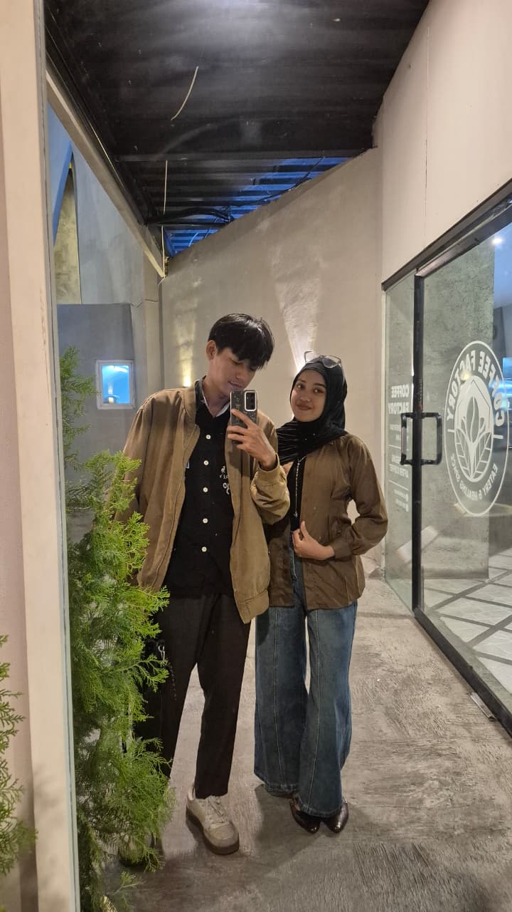
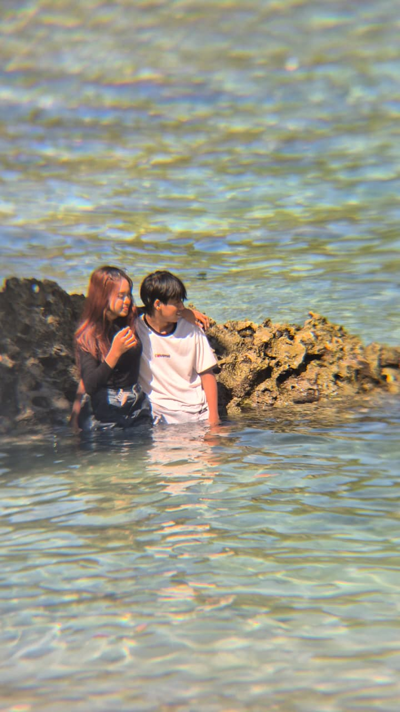
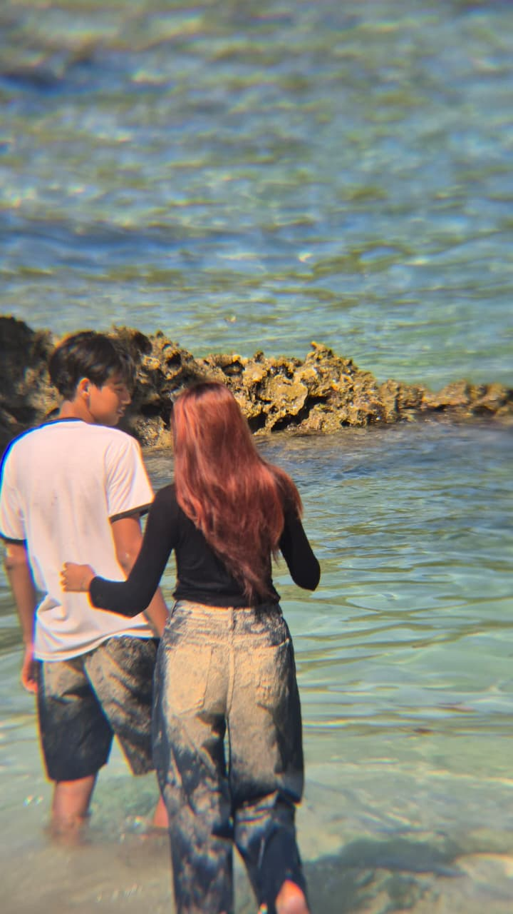

<!DOCTYPE html>
<html lang="id">
<head>
    <meta charset="UTF-8">
    <meta name="viewport" content="width=device-width, initial-scale=1.0">
    <title>Our Love Story ❤️</title>
    <!-- Menggunakan font estetik kekinian -->
    <link href="https://fonts.googleapis.com/css2?family=Caveat:wght@700&family=Plus+Jakarta+Sans:wght@400;600;800&display=swap" rel="stylesheet">
    <style>
        :root {
            --bg-color: #fbf6f0;
            --primary-pink: #ff6b8b;
            --soft-pink: #ffebf0;
            --dark-text: #2d2426;
            --accent-green: #d8e2dc;
        }

        body {
            font-family: 'Plus Jakarta Sans', sans-serif;
            background-color: var(--bg-color);
            color: var(--dark-text);
            text-align: center;
            margin: 0;
            padding: 15px;
            overflow-x: hidden;
            position: relative;
            min-height: 100vh;
            display: flex;
            flex-direction: column;
            justify-content: center;
            align-items: center;
        }

        /* Top Header */
        header {
            margin-bottom: 10px;
            z-index: 10;
        }
        header h1 {
            font-size: 1.8rem;
            font-weight: 800;
            margin: 0;
            letter-spacing: -1px;
        }
        header p {
            font-size: 0.9rem;
            color: #8c7a7b;
            margin: 5px 0 0 0;
        }

        /* Love Counter Widget Minimalis */
        .counter-box {
            background-color: white;
            padding: 10px 20px;
            border-radius: 50px;
            box-shadow: 0 4px 20px rgba(0,0,0,0.04);
            margin: 15px 0;
            z-index: 10;
            display: inline-flex;
            align-items: center;
            gap: 10px;
            border: 1px solid rgba(0,0,0,0.05);
        }
        .counter-box p {
            margin: 0;
            font-size: 0.8rem;
            font-weight: 600;
            color: #8c7a7b;
        }
        .counter-box h2 {
            margin: 0;
            font-size: 1.1rem;
            font-weight: 800;
            color: var(--primary-pink);
        }

        /* Container Slider Modern */
        .slider-container {
            width: 100%;
            max-width: 450px;
            position: relative;
            overflow: hidden;
            border-radius: 32px;
            box-shadow: 0 20px 40px rgba(0,0,0,0.08);
            background: #fff;
            z-index: 10;
            border: 1px solid rgba(0,0,0,0.03);
        }

        .slides {
            display: flex;
            transition: transform 0.6s cubic-bezier(0.16, 1, 0.3, 1);
        }

        .slide {
            min-width: 100%;
            box-sizing: border-box;
            padding: 30px 25px;
            display: flex;
            flex-direction: column;
            justify-content: space-between;
            align-items: center;
            min-height: 520px;
            position: relative;
            background: #fff;
        }

        /* --- STYLING MACAM-MACAM LAYOUT SLIDE KEKINIAN --- */
        
        /* Layout 1: Editorial (Foto Penuh + Teks Melayang) */
        .layout-editorial {
            position: relative;
            padding: 0 !important;
        }
        .layout-editorial img {
            width: 100%;
            height: 100%;
            object-fit: cover;
            position: absolute;
            top: 0; left: 0;
        }
        .editorial-overlay {
            position: absolute;
            bottom: 0; left: 0; right: 0;
            background: linear-gradient(to top, rgba(0,0,0,0.8), transparent);
            padding: 40px 20px 30px 20px;
            color: white;
            text-align: left;
        }
        .editorial-overlay .poem-text { color: #f0f0f0; font-size: 1.1rem; }

        /* Layout 2: Polaroid Miring (Aesthetic Scrapbook) */
        .layout-scrapbook { background: #faf6f0; }
        .polaroid-tilt {
            background: white;
            padding: 12px 12px 25px 12px;
            box-shadow: 0 10px 25px rgba(0,0,0,0.08);
            transform: rotate(-3deg);
            border-radius: 4px;
            width: 85%;
            margin-top: 20px;
        }
        .polaroid-tilt img { width: 100%; height: 260px; object-fit: cover; border-radius: 2px; }

        /* Layout 3: Clean Minimalist (Fokus ke Teks & Foto Bulat) */
        .layout-minimal { background: #fff; }
        .circle-thumb {
            width: 180px; height: 180px;
            border-radius: 50%;
            object-fit: cover;
            border: 5px solid var(--soft-pink);
            margin-top: 30px;
        }
        .minimal-quote {
            font-size: 1.2rem;
            font-weight: 600;
            line-height: 1.5;
            color: var(--dark-text);
        }

        /* Layout 4: Tampilan Chat Imut (iMessage Style) */
        .chat-container {
            width: 100%;
            display: flex;
            flex-direction: column;
            gap: 10px;
            margin-top: 15px;
        }
        .chat-bubble {
            padding: 12px 16px;
            border-radius: 20px;
            font-size: 0.95rem;
            max-width: 75%;
            line-height: 1.4;
        }
        .chat-sender { background: var(--soft-pink); color: var(--dark-text); align-self: flex-start; border-bottom-left-radius: 4px; }
        .chat-receiver { background: var(--primary-pink); color: white; align-self: flex-end; border-bottom-right-radius: 4px; }
        .chat-img { width: 100%; height: 160px; object-fit: cover; border-radius: 16px; margin-bottom: 5px; }

        /* Layout 5: Magazine Grid */
        .grid-box {
            display: grid;
            grid-template-columns: 1fr 1fr;
            gap: 10px;
            width: 100%;
            margin-top: 20px;
        }
        .grid-box img { width: 100%; height: 140px; object-fit: cover; border-radius: 16px; }
        .grid-box .tall-img { grid-row: span 2; height: 290px; }

        /* Gaya Huruf Tulis Tangan (Handwritten) */
        .handwritten {
            font-family: 'Caveat', cursive;
            font-size: 1.8rem;
            color: var(--primary-pink);
            margin-top: 5px;
        }

        /* Teks Puisi Global */
        .poem-text {
            font-size: 1rem;
            font-weight: 500;
            line-height: 1.6;
            color: #5c4d50;
            margin: 0;
        }

        /* Navigasi */
        .navigation-btn { margin-top: 20px; margin-bottom: 25px; display: flex; gap: 10px; }
        .btn {
            background-color: var(--dark-text);
            color: white;
            border: none;
            padding: 12px 24px;
            font-size: 0.95rem;
            font-weight: 600;
            border-radius: 50px;
            cursor: pointer;
            transition: 0.2s ease;
            z-index: 15;
            box-shadow: 0 4px 12px rgba(0,0,0,0.05);
        }
        .btn:hover { background-color: var(--primary-pink); transform: translateY(-2px); }
        .btn-pink { background-color: var(--primary-pink); }
        .btn-pink:hover { background-color: #ff4d73; }

        /* Musik Melayang */
        .music-controller {
            position: fixed;
            bottom: 20px;
            right: 20px;
            background-color: white;
            color: var(--dark-text);
            width: 45px;
            height: 45px;
            border-radius: 50%;
            display: flex;
            justify-content: center;
            align-items: center;
            font-size: 16px;
            cursor: pointer;
            box-shadow: 0 8px 24px rgba(0,0,0,0.1);
            z-index: 100;
            border: 1px solid rgba(0,0,0,0.05);
        }
        .rotate-animation { animation: spin 4s linear infinite; }
        @keyframes spin { 100% { transform: rotate(360deg); } }

        /* Elemen Animasi Latar */
        .petal { position: fixed; top: -50px; font-size: 18px; pointer-events: none; z-index: 2; animation: fall linear forwards; }
        @keyframes fall {
            0% { transform: translateY(0) rotate(0deg) translateX(0); opacity: 1; }
            100% { transform: translateY(105vh) rotate(360deg) translateX(60px); opacity: 0; }
        }
    </style>
</head>
<body>

    <audio id="mySong" src="lagu.mp3" loop></audio>
    <div class="music-controller rotate-animation" id="musicBtn" onclick="toggleMusic()">⏸️</div>

    <header>
        <h1>our happy archive.</h1>
        <p>dibuat sepenuh hati khusus buat Chintia ✨</p>
    </header>

    <div class="counter-box">
        <p>days shared:</p>
        <h2 id="days-count">0 days</h2>
    </div>

    <div class="slider-container">
        <div class="slides" id="slides">
            
            <!-- SLIDE 1: COVER KEKINIAN (Gaya Poster Minimalis) -->
            <div class="slide" style="background: var(--soft-pink); justify-content: center; gap: 20px;">
                <span style="font-size: 3.5rem;">🎒</span>
                <div>
                    <h2 style="font-size: 2.2rem; margin: 0; font-weight: 800; letter-spacing: -1px;">The Story <br>of Us.</h2>
                    <p class="handwritten">Panji & Chintia cerita kita</p>
                </div>
                <p style="font-size: 0.85rem; color: #a68a8e; max-width: 80%; line-height: 1.4;">Klik tombol di bawah untuk menggeser ke halaman berikutnya...</p>
            </div>
            
            <!-- SLIDE 2: LAYOUT EDITORIAL (Majalah Mood) -->
            <div class="slide layout-editorial">
                
                <div class="editorial-overlay">
                    <p class="poem-text">"Cinta itu bukan tentang menahan amarah, tapi meninggalkan ego demi senyumanmu."</p>
                    <p class="handwritten" style="color: var(--soft-pink); font-size: 1.5rem;">— rindu pertama</p>
                </div>
            </div>

            <!-- SLIDE 3: LAYOUT SCRAPBOOK (Polaroid Aesthetic) -->
            <div class="slide layout-scrapbook">
                <div class="polaroid-tilt">
                    
                </div>
                <div style="margin-top: 15px;">
                    <p class="poem-text">"Sebab rindu tak pernah salah memilih tempat pulang. Ia selalu tahu jalan menuju hatimu."</p>
                </div>
            </div>

            <!-- SLIDE 4: LAYOUT MINIMALIS (Focus Text & Circle Photo) -->
            <div class="slide layout-minimal">
                
                <div style="margin-bottom: 20px;">
                    <p class="minimal-quote">"Biarkan waktu menua, tapi rasa kita tetap tumbuh muda."</p>
                    <span style="color: var(--primary-pink)">✦ ✦ ✦</span>
                </div>
            </div>

            <!-- SLIDE 5: LAYOUT CHAT IMUT (Gelembung Pesan) -->
            <div class="slide" style="background: #f4f5f6;">
                <div class="chat-container">
                    <div class="chat-bubble chat-sender">Kamu sadar gak? 🤔</div>
                    <div class="chat-bubble chat-receiver">
                        
                        Bukan karena kamu sempurna, tapi bersamamu ketidaksempurnaanku menjadi indah. 🤍
                    </div>
                </div>
                <p class="handwritten" style="margin-bottom: 10px;">chat random berujung sayang</p>
            </div>

            <!-- SLIDE 6: LAYOUT MAGAZINE GRID (Kolase Estetik) -->
            <div class="slide">
                <div class="grid-box">
                    
                    
                    <div style="display: flex; align-items: center; justify-content: center; background: var(--soft-pink); border-radius: 16px; padding: 10px;">
                        <p class="handwritten" style="font-size: 1.4rem; margin:0;">safe place ☕</p>
                    </div>
                </div>
                <p class="poem-text" style="margin-top: 15px;">"Menatap matamu adalah caraku menemukan tenang di tengah bisingnya dunia."</p>
            </div>

            <!-- SLIDE 7: LAYOUT SCRAPBOOK ALTERNATIF -->
            <div class="slide layout-scrapbook">
                <div class="polaroid-tilt" style="transform: rotate(3deg); background: #fff;">
                    
                </div>
                <p class="poem-text" style="margin-top: 15px;">"Rindu ini seperti detak jantung; datang diam-diam namun tak pernah berhenti."</p>
            </div>

            <!-- SLIDE 8: LAYOUT EDITORIAL GELAP (Elegant Mood) -->
            <div class="slide layout-editorial">
                
                <div class="editorial-overlay" style="background: linear-gradient(to top, rgba(76,17,48,0.9), transparent);">
                    <p class="poem-text" style="font-size: 1.2rem; font-weight: 600;">"Jika mencintaimu adalah sebuah kesalahan, maka aku tidak pernah ingin menjadi benar."</p>
                </div>
            </div>

            <!-- SLIDE 9: LAYOUT SPOTIFY ALBUM STYLE -->
            <div class="slide" style="background: #121212; color: white;">
                
                <div style="text-align: left; width: 100%; padding: 0 10px;">
                    <h3 style="margin: 0; font-size: 1.2rem;">Kamu Adalah Bait Terindah<br>yang pernah dituliskan takdir di dalam hidupku.</h3>
                    <p style="margin: 5px 0; color: #b3b3b3; font-size: 0.9rem;">Playlist: Masa Depan Kita</p>
                    <div style="width: 100%; height: 4px; background: #333; border-radius: 2px; margin-top: 15px; position: relative;">
                        <div style="width: 70%; height: 100%; background: var(--primary-pink); border-radius: 2px;"></div>
                    </div>
                </div>
                <p class="poem-text" style="color: #b3b3b3; font-size: 0.85rem; margin-bottom: 10px;">01:43 ───────── 03:00</p>
            </div>

            <!-- SLIDE 10: LAYOUT CLEAN & BOLD -->
            <div class="slide" style="background: linear-gradient(135deg, #fff 60%, var(--soft-pink));">
                
                <div style="text-align: left; margin-top: 15px;">
                    <p class="poem-text" style="font-size: 1.1rem; font-weight: 600; color: var(--dark-text)">"Sederhana saja, aku hanya ingin menjadi alasan di balik senyum manismu setiap hari."</p>
                </div>
            </div>

            <!-- SLIDE 11: LAYOUT HIGHLIGHT NOTE -->
            <div class="slide" style="justify-content: center; gap: 30px;">
                <div style="border-left: 4px solid var(--primary-pink); padding-left: 15px; text-align: left;">
                    <p style="font-size: 1.3rem; font-weight: 800; margin: 0 0 10px 0;">Janji Kecil Kita 🔐</p>
                    <p class="poem-text">"Selama genggaman tangan ini belum terlepas, aku percaya kita bisa melewati apa saja."</p>
                </div>
                <span style="font-size: 3rem; animation: pulse 1s infinite">✨</span>
            </div>

            <!-- SLIDE 12: FINAL PENUTUP (Modern Minimalist Card) -->
            <div class="slide" style="background: var(--dark-text); color: white; justify-content: center; gap: 20px;">
                <span style="font-size: 3rem;">❤️</span>
                <div>
                    <h2 style="font-size: 1.8rem; margin: 0; font-weight: 800;">Terima Kasih, Sayang</h2>
                    <p class="handwritten" style="color: var(--soft-pink); font-size: 1.6rem; margin-top: 10px;">Tetap bersamaku ya?</p>
                </div>
                <p style="font-size: 0.85rem; color: #a69294; max-width: 85%; line-height: 1.5;">Terima kasih telah berjalan sejauh ini. Tetaplah jadi orang yang paling aku rindukan di setiap putaran waktu.</p>
                <button class="btn btn-pink" onclick="surprised()">Click for Surprise 💕</button>
            </div>

        </div>
    </div>

    <div class="navigation-btn">
        <button class="btn" onclick="prevSlide()">back</button>
        <button class="btn btn-pink" onclick="nextSlide()">next</button>
    </div>

    <script>
        // 1. LOVE COUNTER
        const tanggalJadian = new Date("2025-11-01"); 
        function updateCounter() {
            const sekarang = new Date();
            const selisihWaktu = sekarang - tanggalJadian;
            const selisihHari = Math.floor(selisihWaktu / (1000 * 60 * 60 * 24));
            document.getElementById("days-count").innerText = selisihHari + " days";
        }
        updateCounter();

        // 2. SLIDER
        let currentIndex = 0;
        const slidesContainer = document.getElementById('slides');
        const totalSlides = document.querySelectorAll('.slide').length;

        function showSlide(index) {
            if (index >= totalSlides) currentIndex = 0;
            else if (index < 0) currentIndex = totalSlides - 1;
            else currentIndex = index;
            slidesContainer.style.transform = `translateX(-${currentIndex * 100}%)`;
        }

        // AUTO-PLAY MUSIC INTERACTION TRIK
        function playSongOnInteraction() {
            const mySong = document.getElementById("mySong");
            if (mySong.paused) {
                mySong.play().then(() => {
                    document.removeEventListener('click', playSongOnInteraction);
                }).catch(e => console.log("Menunggu klik..."));
            }
        }
        document.addEventListener('click', playSongOnInteraction);

        function nextSlide() { showSlide(currentIndex + 1); }
        function prevSlide() { showSlide(currentIndex - 1); }

        // 3. POPUP FINAL
        function surprised() {
            alert("Aww! I love you more than words can say! 💖 Makasih udah selalu menemani hariku, sayanggg!");
            for(let i=0; i<35; i++) {
                setTimeout(createPetal, i * 80);
            }
        }

        // 4. HUJAN ELEMEN ESTETIK (Bunga & Kilau)
        const flowers = ['🌸', '🌹', '✨', '🤍'];
        function createPetal() {
            const petal = document.createElement('div');
            petal.classList.add('petal');
            petal.innerText = flowers[Math.floor(Math.random() * flowers.length)];
            petal.style.left = Math.random() * 100 + 'vw';
            petal.style.fontSize = Math.random() * 15 + 12 + 'px';
            const duration = Math.random() * 3 + 4;
            petal.style.animationDuration = duration + 's';
            document.body.appendChild(petal);
            setTimeout(() => { petal.remove(); }, duration * 1000);
        }
        setInterval(createPetal, 450);

        // 5. MANUAL CONTROLLER
        const mySong = document.getElementById("mySong");
        const musicBtn = document.getElementById("musicBtn");
        function toggleMusic() {
            if (mySong.paused) {
                mySong.play();
                musicBtn.innerText = "⏸️";
                musicBtn.classList.add("rotate-animation");
            } else {
                mySong.pause();
                musicBtn.innerText = "🎵";
                musicBtn.classList.remove("rotate-animation");
            }
        }
    </script>
</body>
</html>